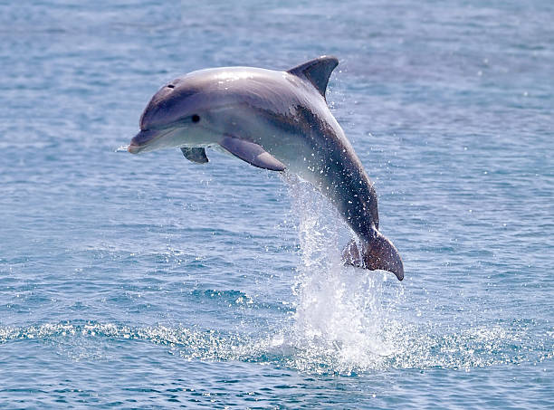
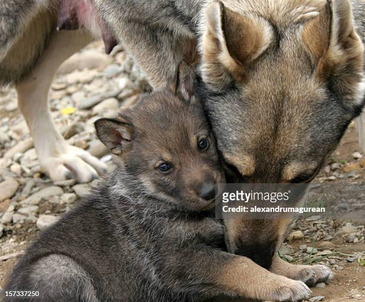
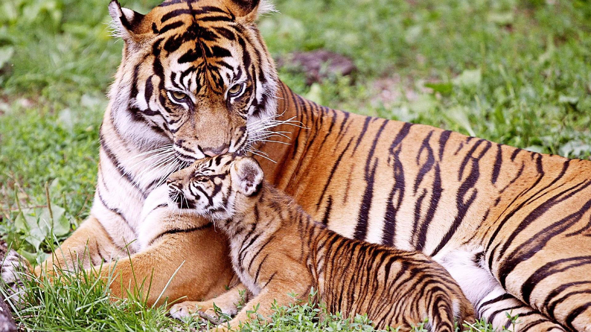
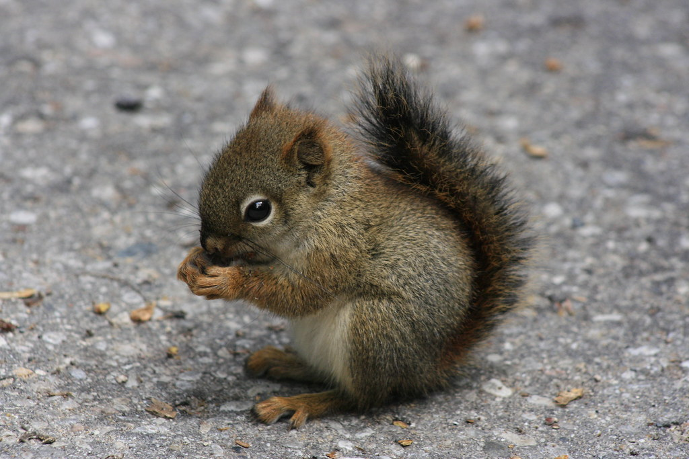
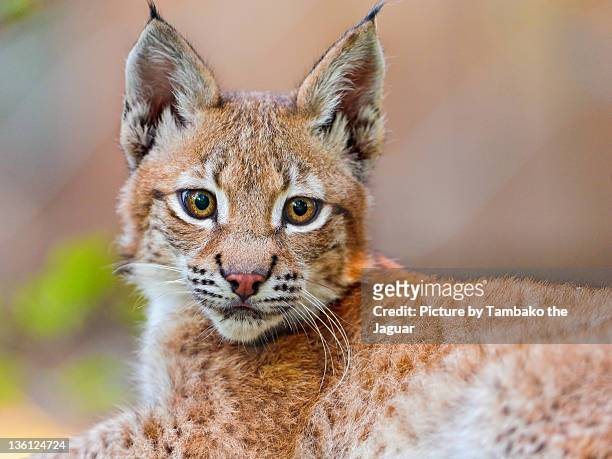
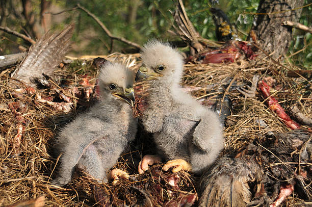

My Fav Animals
About
I love animals that are roam free and wild. These are some of my favorite wild creatures but when they're tiny and cute. Word of warning: if ever encounter any kind of baby animal, Get Away! Right then and there because mothers of nature are ferocious!
Rankings
- Dolphin

Dolphin Calf - Credit: Kristian Sekulic (iStockphtos)
- Wolf

Wolf Cub
- Tiger

Tiger Kits - Credit: wallpapers.com
- Squirrel

Squirrel Kits - Credit: Charles Dawley
- Lynx

Lynx Kits
- Eagles

Eaglettes - Credit: Getty Images/iStockphoto